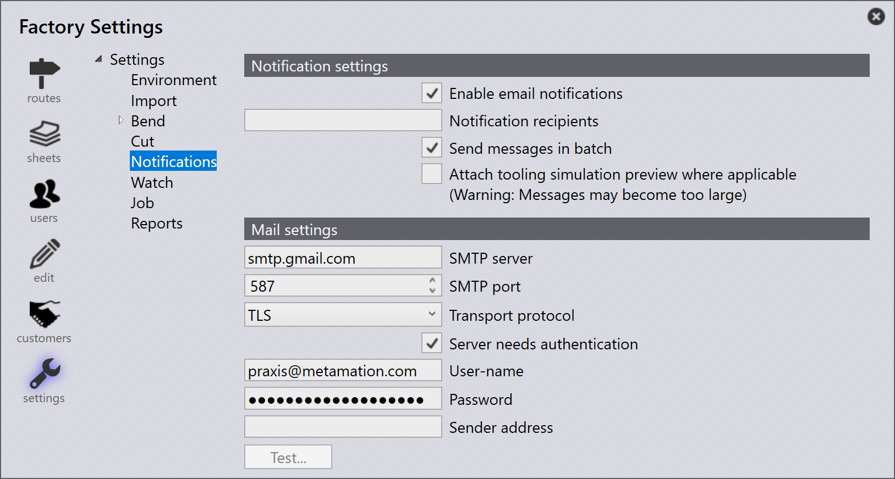
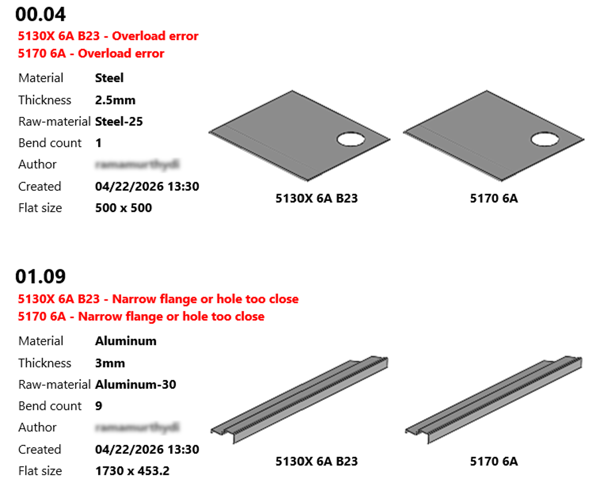
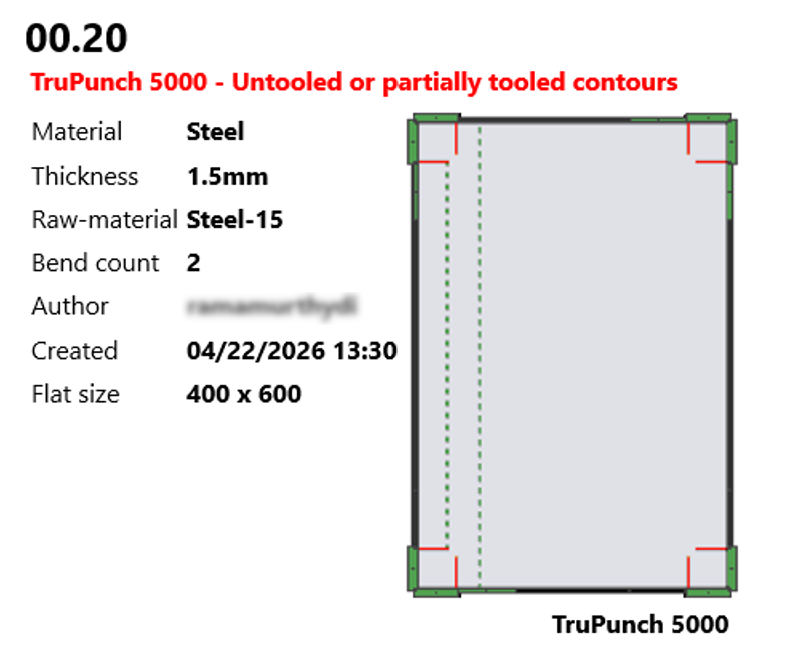

Notificaciones
Las notificaciones informan a los usuarios sobre errores de CAD y de utillaje que se producen dentro del sistema. Garantizan que los problemas se comuniquen con prontitud para que se puedan tomar las medidas oportunas.
Notificación por correo electrónico
La función de notificación por correo electrónico permite a los usuarios configurar y recibir alertas automáticas por correo electrónico ante errores de CAD y de utillaje. Una vez configurado, el sistema envía automáticamente correos electrónicos a los destinatarios especificados cada vez que se produce un evento relevante, garantizando que los problemas se aborden con prontitud.
Para configurar las notificaciones por correo electrónico, vaya a: factory > settings > Notifications

La página Notifications consta de las siguientes secciones:
Ajustes de notificación
La sección Notification settings controla cómo se generan y entregan las alertas por correo electrónico a los destinatarios.
-
Enable email notifications - Permite que el sistema envíe notificaciones según las condiciones configuradas.
-
Notification recipients - Especifica la(s) dirección(es) de correo electrónico de los destinatarios. Se pueden añadir varios destinatarios separándolos con una coma (
,) o un espacio. -
Send messages in batch - Combina varias notificaciones en un solo correo electrónico. Los mensajes generados dentro de un intervalo de tiempo definido se agrupan, lo que ayuda a reducir el volumen de correos electrónicos y evita la saturación.

-
Attach tooling simulation preview where applicable - Adjunta una vista previa de simulación del utillaje al correo electrónico de notificación cuando está disponible. Esto resulta útil para revisar los problemas relacionados con el utillaje directamente desde el correo electrónico.

| Incluir la vista previa de simulación puede aumentar considerablemente el tamaño del correo electrónico. |
Mail settings
La sección Mail settings define la configuración del servidor de correo saliente que el sistema utiliza para entregar las notificaciones por correo electrónico. Estos ajustes deben configurarse correctamente para que las notificaciones se envíen con éxito.
-
SMTP server - Especifica la dirección del servidor SMTP utilizado para enviar los correos electrónicos salientes (por ejemplo,
smtp.gmail.com). Esta información suele estar disponible en la sección de cuenta o de ajustes del cliente de correo del usuario. -
SMTP port - Define el número de puerto que utiliza el servidor de correo para enviar los correos electrónicos a través de internet. Los valores comunes son
465(SSL) y587(TLS). -
Transport protocol - Especifica el protocolo utilizado para enviar de forma segura los correos electrónicos desde la aplicación al servidor de correo (por ejemplo, SSL o TLS).
-
Server needs authentication - Habilita la autenticación para el servidor SMTP. Cuando está habilitada, el servidor valida el nombre de usuario y la contraseña antes de enviar los correos electrónicos.
-
User-name - Especifica la cuenta de correo electrónico utilizada para autenticarse con el servidor SMTP y enviar notificaciones.
-
Password - Especifica la contraseña asociada a la cuenta de correo electrónico utilizada para la autenticación.
-
Sender address - Especifica la dirección de correo electrónico del remitente que se muestra a los destinatarios cuando reciben las notificaciones.
-
Test… - Envía un correo electrónico de prueba para verificar la configuración del servidor de correo.
Haga clic en Test… para validar la configuración. Se muestra un mensaje de confirmación si la prueba es correcta; de lo contrario, se muestra un mensaje de error que indica la causa del fallo.
|